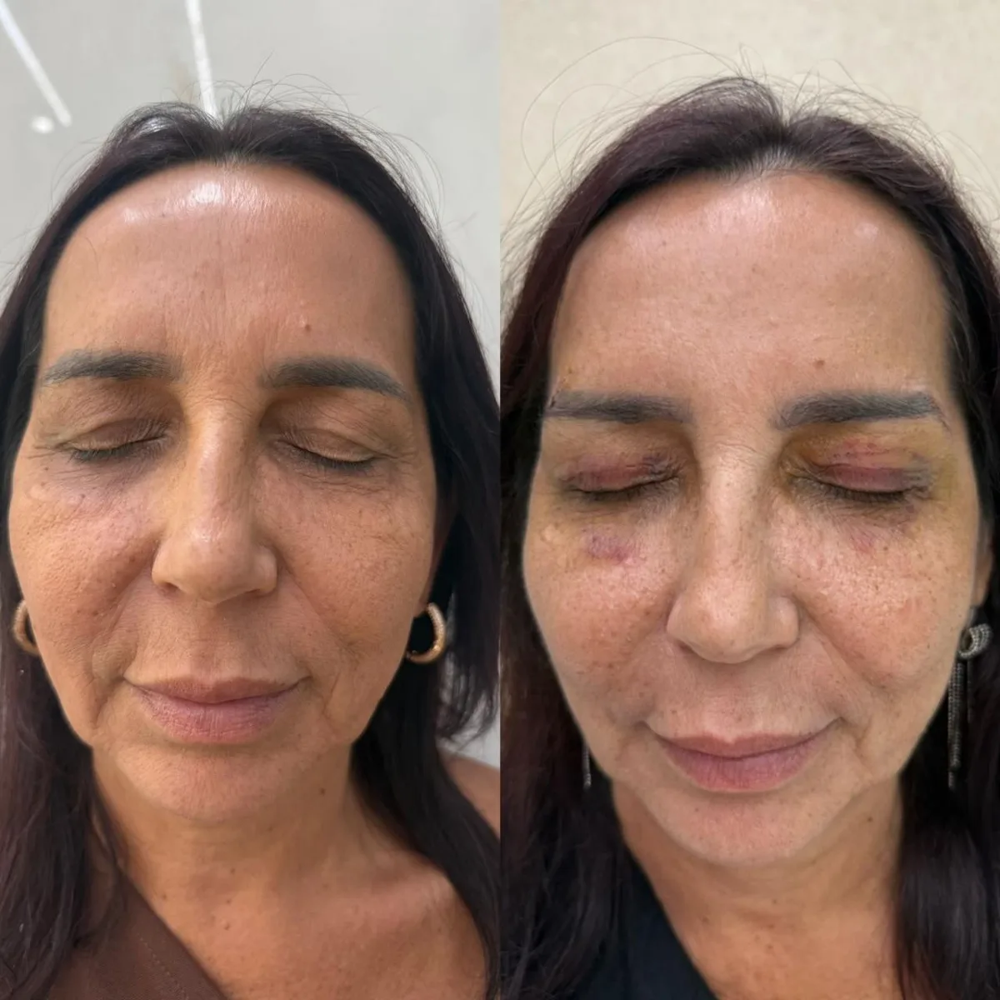

Harmonização orofacial
Procedimentos que buscam o equilíbrio estético da face, respeitando os traços de cada pessoa. A avaliação analisa proporções, queixas e expectativas para definir o que é indicado — e o que não é.
Solicitar informações sobre harmonização orofacial pelo WhatsApp